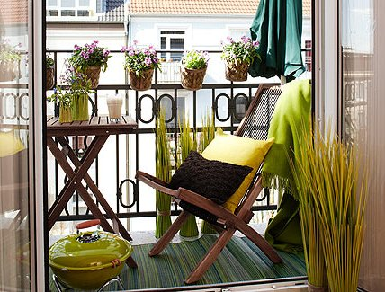

Mi Balcón - Ideas para aprovechar
| Elementos | Descripción |
|---|---|
| Piso | Alfombra, apta exterior |
| Mesa | Mesa cuadrada en madera tratada para exterior |
| Reposera | Modelo "Relax", 3 posiciones |
| Sombrilla | En composé con la alfombra |
| Macetas | De terracota, en portamacetas de alambre |

- Los muebles que se usen deben tener tratamiento para exterior, lo que permite su preservación y fácil limpieza.
- El material de la alfombra, almohadones y demás textiles es apto para su uso en el exterior.
- Los portamacetas de alambre permiten el lucimiento del diseño de las macetas y facilitan el enganche a las rejas o barandas del espacio.
- Variedad de verdes en las plantas y algunas flores le darán calidez al espacio y nos transmitirá bienestar.